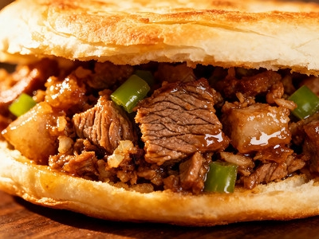
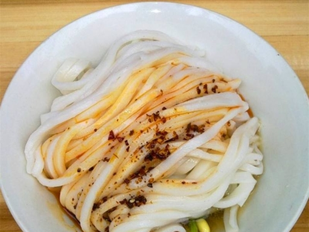
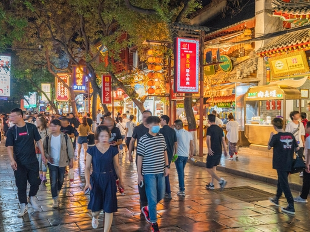
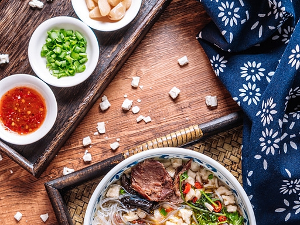
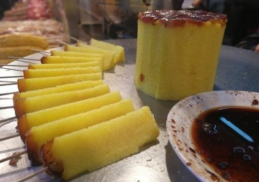
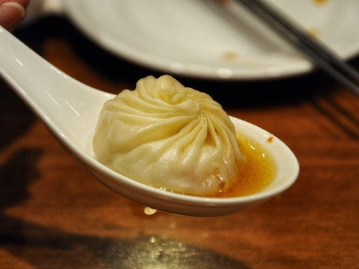
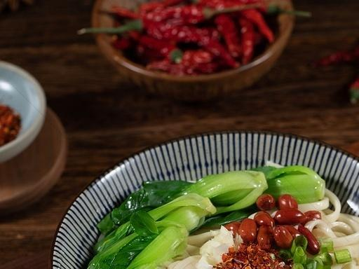
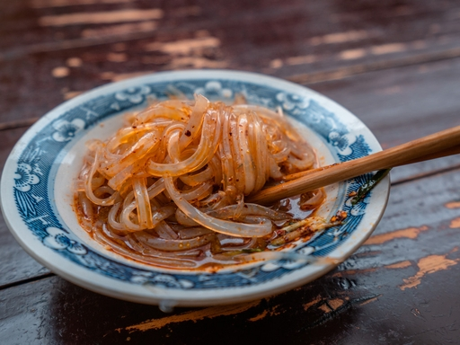

Xi'an's cuisine is a crossroads – Central Plains wheat, Hui Muslim spices, and Tang dynasty legacy. Get ready for a flavor adventure.

Pita bread stuffed with slow-braised pork, beef, or lamb. Often called the "world's oldest sandwich". The crispy outside and juicy inside make it a Xi'an icon.

Hand-ripped wheat starch noodles tossed with cucumber, bean sprouts, and a fiery chili oil. Perfect for hot summer days or any day you crave a tangy kick.

Over 300 food stalls – from persimmon cakes to walnut cookies, grilled lamb skewers to sticky rice pastries.

A true Xi'an ritual: you crumble the flatbread into small pieces, then the kitchen adds rich mutton broth and meat. Eat with pickled garlic and chili sauce.




Xi'an was the eastern terminus of the Silk Road, bringing spices, nuts, and cooking techniques from Central Asia. That's why you'll find cumin-heavy lamb skewers, naan-like bread, and a love for pomegranates (imported from Persia over 2000 years ago).
Join a local food tour and discover why Xi'an is often called China's "food capital of the north".
Click to reveal a tasty legend 🥢
Discover the hidden flavors of Xi'an! Get exclusive food & travel tips straight to your inbox.
No spam, just timeless Chang'an stories.